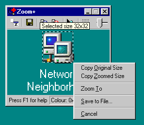
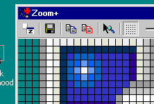
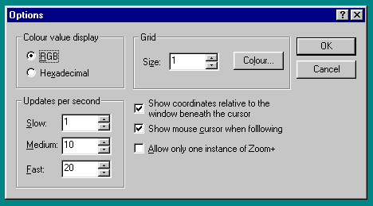

» home
Zoom+ 'the ultimate screen magnifier'
[What can Zoom+ do?] [Feature List] [Download] [Source Code!]
What can Zoom+ do?

Zoom+ is a general screen magnification tool. It can magnify any portion of the screen by up to 32 times. Panning around, zooming in or out.
Icon Thief
Zoom+ provides software developers and web designers with an easy method of grabbing
screen elements such as toolbar buttons and icons from running programs or web sites.
Simply zoom in on the area you are interested in and copy the view to the clipboard, or for
more precision, click the right mouse button on the Zoom+ window and drag a selection
rectangle. When you release the right mouse button you can copy a selection of the screen
to the clipboard or save it to file.
Pixel Counting
Zoom+ also adds easy pixel counting by giving a selection marquee when the right
mouse button is dragged on the main window. This selection can then be copied to clipboard
or saved to file. Whilst the selection marquee is displayed a tool tip of the selection
dimensions is displayed.
Context Menus
Context menus provide context sensitive choices. The status bar colour and
co-ordinates panels have their own context menu and the main display has one for just right
clicking on the display and one for when you right-drag on the main display.

Status Bar
The status bar displays really useful information such as the colour beneath the
pointer, in both a colour panel and as RGB. There is also a panel that displays the
current mouse co-ordinates in either screen co-ordinates or co-ordinates relative to the
client area of the window beneath the cursor. The colour format and the co-ordinate choice
can be changed from the options dialog or from the context menu on the colour panel.
|

|
Grid
An overlay grid allows for quick sizing and alignment of screen elements, the
grid size and colour can be changed from the options dialog available from the main
context menu or from the system menu. You can toggle the grid on and off by using the tool
bar button or a shortcut key.
|
Other
To maximise your screen usage you can switch off the toolbar and status from the
main context menu. All toolbar features are available from either the main context menu or
from keyboard shortcuts.
Intellimouse support means you can zoom in and out using CTRL+Mouse Wheel, plus internet
style panning is supported simply by clicking the middle mouse button
Context Help
Zoom+has full help throughout, try right clicking on the tool bar or status bar and selecting
What's This from the context menu. There is full context help in the options dialog too.
[TOP]
- Magnify any portion of the screen up to 32 times.
- No more pixel counting. Whenever you make a selection with Zoom+ the size of the selection in screen pixels is displayed in a ToolTip style popup window.
- The overlay grid allow instant alignment and pixel counting. The colour of the grid and the density of the grid are both user definable.
- Intellimouse support for data-zoom, that is hold down the CTRL key whilst pushing the mouse wheel forwards and backwards.
Internet Explorer style auto-panning. Simply click the middle mouse button on the main Zoom+ display and you can pan around the entire screen.
- Full keyboard support.
- Always on top - this allows Zoom+ to remain floating above all other applications.
- Copy to clipboard - both the zoomed image and the screen image can be copied to the clipboard.
- Save to file support - both the zoomed image and the screen image can be saved to an uncompressed Windows bitmap, this file can then be loaded and edited using an image editor such as Microsoft Paint.
- Follow mouse - allows Zoom+ to update the display every time the mouse moves. This is useful when inspecting areas of the screen that may be animated or where you are not really sure where the area of interest may be.
- Advanced screen grabbing feature allows any portion of the screen to be easily saved to the clipboard or file.
Highlight - sometimes it is not obvious which area of the screen you are magnifying, highlight will cause the magnified screen rectangle to flash several times.
- Zoom To - enables you to easily zoom in on the area of interest; just select the area you want by holding down the right mouse button and dragging, and choose Zoom To from the context menu.
- Zoom+ remembers all of your settings and preferences and has an exceptionally small footprint.
- Status bar shows RGB or hexadecimal value at the cursor, the actual colour at the cursor and the current cursor position.
- Status bar shows the mouse cursor position, either relative to the screen to relative to the client are of the window beneath the cursor.
- Transparency in Windows 2000 means you can zoom beneath Zoom+, use SHIFT+MouseWheel to alter the transparency for Zoom+.
[TOP]

Downloading
Click here to download compiled Zoom+ — 55KB
Click here for compiled Unicode version — 55KB
Important: If you redistribute Zoom+ please leave the zip file intact. Do not replace/modify the help file. You must not sell Zoom+ or redistribute it as part of a commercial product without prior agreement with Russ Freeman
Zoom+ grew up very quickly, help was added, configuration dialog and context menus came. I also added the nag screen and the shareware stuff. I was never really happy with this and I have now removed the nagware.
Not only that but I feel the source code also serves as a good example so I have decided to release it. I consider the source code to be open, that is you can amend it and use it but the copyright remains mine. It's as simple as that.
Changes? You will find a file called "Features not done.txt" which describes some of the features I have yet to implement. Maybe you would like to add them instead or perhaps there is a feature you want yourself. If you add or fix anything be sure to email me the source changes and I will merge them into the main source.
Click here for full C++ source code — 99KB
[TOP]